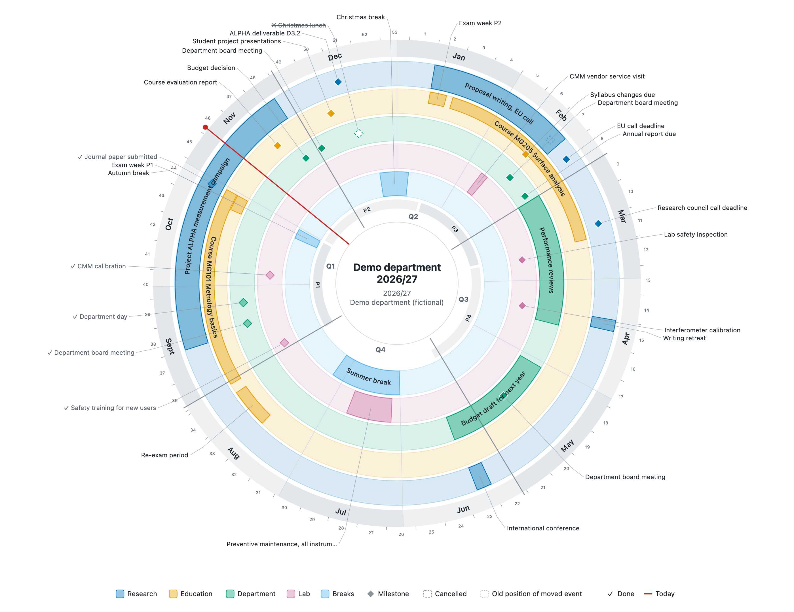

A simple planning wheel for the whole department: deadlines, courses, meetings, lab work and breaks in one picture that everyone understands at a glance.

Rings for each area of work, months, weeks, quarters and study periods. Spans, deadlines and meetings with times.
A short quarterly review. Every move or cancellation keeps its reason in a change log.
Send the file, print it on A3, or export a calendar file that drops all events into Outlook.
One file you open in your browser. No install, no account, nothing sent anywhere. English and Svenska.